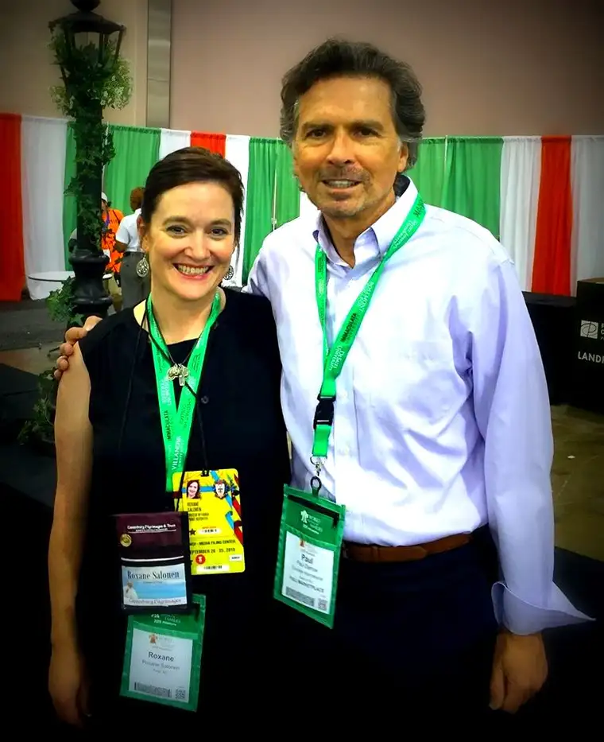

I was making my way through the exhibition hall at the Philadelphia Convention Center in September, during the World Meeting of Families conference, when I saw him.
His face was unmistakable. It was only a few months before that I’d become mesmerized, late in the night, with his story.
I’d come to know Paul Darrow not through his work as an international model who had dazzled hundreds of famous people in the height of his young-adult heyday, but through a documentary that had gripped me, leaving me in tears, with a new understanding of humanity and our deep longing for connection with others.
It was a story of redemption of the most powerful kind. A soul on a quest for fulfillment finds it at every turn and yet comes up still achingly empty. And then, one night after partying, he turns the dial on his television and sees an image he can’t believe — a nun who has a distorted face and a patch over her eye. He is struck to his marrow by the sight of her, so at odds with everything he believes to be worthy of his attention, that he is moved to mock her, even inviting his lover to come into the room from another to join in the jeering.
And yet…when his lover leaves and he goes to turn off the channel, that nun, from the other side of the tube, says something that rings of unexpected truth, and the words reach his soul in a place that has not been touched for years, maybe never, and deep down in that deadened place, something new and green begins to grow.
He continues sneaking glimpses of the distorted “pirate nun,” the one he had laughed at, and each time, he hears something that begins to peel away the layers of hatred, lust and greed that had been forming around his heart, keeping it bound. Day by day, the nun’s penetrating words begin to change and free him (read more in this LifeSiteNews piece here).
On Easter 2016, this same nun, suffering for years now following a stroke — a woman who was tested by fire and fought her way out of hell on earth to become the founder of a religious order and an international communications network — dies. And one of my first thoughts is of this man who was so transformed; the one I met in Philly.
“Mother Angelica really changed my life, you know,” he reminded me in that exhibition hall in September. “I had the pleasure of meeting her a while back, and to thank her in person. It was incredible.”
How can I not rejoice with him and all the heavens? And it was all because of this little old lady, who many still discount, refusing her the chance to teach them something new, or remind them of something old needing renewal. To Paul Darrow, her crotchety pronouncements meant life, and he is not alone.
I think again of the eye patch and her sometimes off-putting statements that even made me cringe at times when I’d listen to her on the radio. And yet if one listened long enough, the love that oozed out of her could not be denied. She was not one to cave to political correctness, and some found that offensive. Others say if not for her, everlasting separation from God might be their fate.
In Desire of the Everlasting Hills, Paul Darrow’s story was the one, of three featured, that most reached me. So it was quite a gift to me to bump into him unexpectedly just months later on that fine Philly day, to encounter the one who was saved by words uttered by an old nun in a habit, and realize that somehow, in hearing his story, she’d changed me, too.
Catholic radio and television have been a treasure trove in my life. I’ve had the pleasure of hosting Catholic radio, as well as being a guest, and for many years now, an avid consumer. If I didn’t have it to turn to each day, my life would be lacking something very edifying and life-giving.
Thank you, Mother Angelica, for all you gave, and the suffering you endured on our behalf. Not everyone got you, Mother, but those who could look past the sometimes ornery, frumpy exterior were privileged to glimpse the shining jewel, and our gratitude is eternal.
Rest in peace, dear one. You have finished the race well; it is time for reprieve. Sing with the angels!